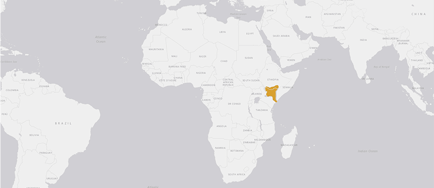
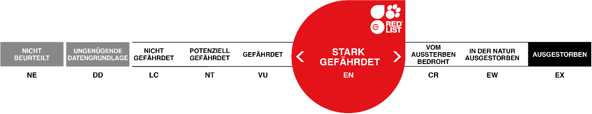
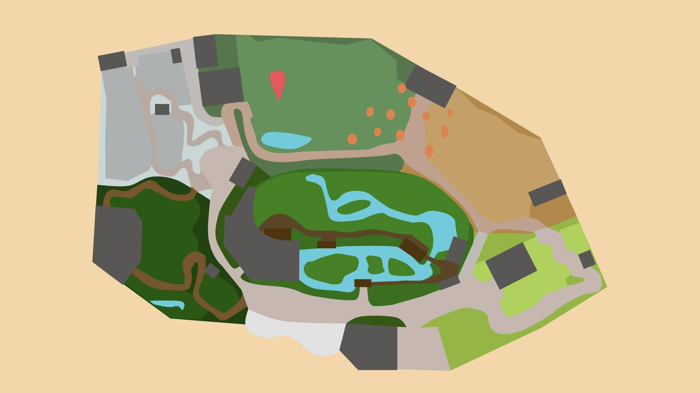

NETZGIRAFFE
GIRAFFA RETICULATA
Eine Giraffe frisst pro Tag bis zu 34 kg Blätter. Wie unsere Kühe gehören auch die Giraffen zu den Wiederkäuern und lassen sich die Nahrung nochmals durch Hals und Mund gehen.
Wenn sich die Giraffe zum Trinken hinabbeugt, muss sie die Beine weit auseinander spreizen, um ans Wasser zu gelangen. Obwohl sie bis zu einem Monat ohne Wasser auskommen kann, trinkt sie bei jeder sich ihr bietenden Gelegenheit. Dabei setzt sie sich auch immer der Gefahr aus, angegriffen zu werden.
Obschon die Giraffe einen sehr langen Hals hat, besitzt sie nur 7 Halswirbel, genau wie alle anderen Säugetiere. Kommuniziert wird im Infraschallbereich (unter 20 Hz). Dadurch ist die Lautäusserung der Giraffe für uns Menschen nicht hörbar.
Steckbrief
| Verwandtschaft | Paarhufer, Giraffenartige |
|---|---|
| Lebensraum | trockene Busch- und Baumsavannen, Dornbuschsteppe, lichte Wälder und saisonale Überschwemmungsgebiete |
| Lebenserwartung | 39 Jahre |
| Futter | verschiedene Blätter mit hohem Nährwert, insbesondere Akazie. Dank hohem Nährwert und einer effizienten Verdauung benötigen sie nur halb so viel Pflanzenmaterial wie Grasfresser. |
| Lebensweise | tagaktiv, Weibchen bewohnen in Gruppen Streifgebiete, Männchen bewohnen alleine Streifgebiete |
Verbreitung
Bedrohunsstatus
Karte
